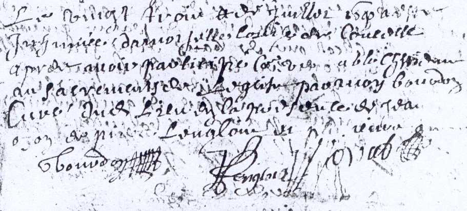
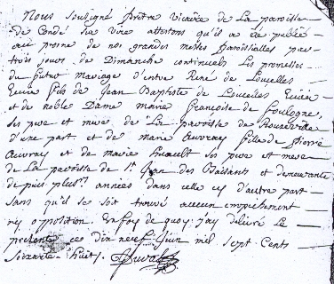
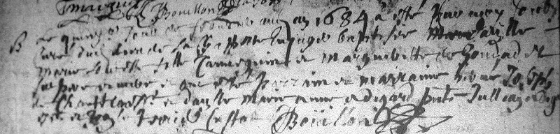

REGISTRES
PAROISSAUX
REGISTRES
PAROISSAUX
CONDÉ-SUR-VIRE
Référence : 5 Mi 395
Provenance : Archives Départementales de
Saint-Lô
|
Le vingt trois de
juillet 1690 a esté
Inhumée damoiselle louise de loucelle
apres avoir participe coe venerable chrestienne
au sacrements de Leglise par moy bourdon
Curé dud lieu en la presence de jean
ozou de pierre Langlois et plusiers autres
Bourdon, Jean
Osouf et Pierre Langlois ont signé.
|

|
|

|
Nous sousigné
prêtre vicaire de La paroisse
de condé sur Vire attestons qu'il a été
publié
au prosne de nos grandes messes paroissialles par
trois jours de dimanche continuels Les promesses
du futur mariage d'entre René de Loucelles
Ecuier fils de Jean Baptiste de Loucelles Ecuier
et de noble Dame marie françoise de foulogne
ses pere et mere de La paroisse de Rouxeville
d'une part et de marie auvray fille de pierre
auvray et de marie huault ses pere et mere
de La paroisse de St Jean des Baisants et demeurante
depuis plusrs annees dans celle cy d'autre part
sans qu'il se soit trouvé aucun empechement
ny opposition en foy de quoy j'ay delivré Le
present ce dix neuf Juin mil sept Cents
Soixante huit
Signé : Duval
|
QUETTEHOU
Provenance : Marie-Hélène BOUCHER et
Laurence LELANDAIS
Enfants de Nicolas HUBERT, notaire
royal, tabellion et capitaine de Quettehou, sieur de la Parquerie,
né vers 1621 et décédé le 07-07-1702
à Quettehou (fils de Jacques HUBERT et Jeanne DU PARC) et de
Louise de
LOUCELLES
décédée entre 1689 et 1694 :
- Pierre, né le
02-02-1647. Parrain : Me Pierre
HUBERT, sieur de Beaugrand, avocat du Roy en l'élection de
Valognes.
- Jacques, né le 13-12-1648.
Marraine : Damoiselle Jeanne DU PARC, sa grand-mère.
Décédé le 09-05-1653.
- Marie, née le 20-03-1650.
Marraine : Marie LE MACON. Décédée le
20-07-1650.
- Renée, née le
24-05-1651. Marraine : Renée de LOUCELLES, soeur de la mère.
- Hervé, né vers 1653, marié
le 09-02-1677 à Theurthéville-Bocage avec Anne de LA ROUTE (Aujourd'hui
9ème jour de février 1677, nous, Hervé AGNAC, prêtre vicaire de cette paroisse,
avons procédé aux cérémonies de mariage fait entre Mre Hervé HUBERT, fils
de Nicolas et Dlle Louise de LOUCELLES, de la
par. de Quettehou, et Anne de la ROUTE, fille de François et Olive LE MONNIER
de cette paroisse, après les choses requises faites auprès dud. Nicolas HUBERT,
Sieur de la Parquerie, père dud. marié, François de la ROUTE, de lad. Louise
de LOUCELLES, de lad. LEMONNIER, de Jacques HUBERT, frère dud. marié,
et Mre Gilles LEMONNIER, approuvé). Contrat
de Mariage le 30-12-1676 en présence de Mr Louis de LOUCELLES, prêtre
curé de Rideauville, Tanneguy de LOUCELLES,
esc. sieur de Launay, Jacques
de LOUCELLES, esc. sieur de Gruchy. Décédé
le 21-06-1718.
- Jacques, né le 09-07-1657.
Parrain : Me Jacques VIEL, sieur de Saire. Marié avec
Jeanne BERNARD. Décédé le 27-04-1730 à
Quinéville.
- Jeanne, née le 21-07-1661.
Parrain : Raoul TOURNAILLE. Marraine : Jeanne DU PARC veuve de
Jacques HUBERT, sieur de la Huberderie. Décédée
le 25-04-1662.
- Louis François, né le
13-05-1663. Parrain : François de BREVOLLES, escuier, sieur de
Maroeuil. Marraine : Dlle
Madeleine de BREVOLLES, fille d'André. Marié le
26-09-1684 avec Elisabeth MAUROUARD (décédée le
28-04-1696, fille de Me
René, sieur du Cihard et de Dlle
Catherine ROBINE) en présence de Nicollas de
LOUCELLES, sieur du lieu.
Marié le 11-07-1697 au Mesnil-au-Val avec Marguerite MARGENEST
(fille de Me J. et Dlle
Catherine HEUZE). Décédé le 25-03-1732.
- Bernardin François, né
le 26-05-1665. Parrain : Nicolas MULDRAC, escuier, sieur des Bois,
seigneur et patron de Grenneville. Marraine : Dlle
Françoise de MONS, fille de François, sieur de
Tebosville. Marié le 14-11-1690 à Morsalines avec Maria
LEMELETIER, fille de Michel.
- Marie, née le 09-04-1667.
Parrain : Guillaume
de LOUCELLES, escuier, sieur de
Launé. Marraine : Jeanne HUBERT, veuve de Christophe HUBERT
sieur de Beaugrand. Mariée le 22-02-1689 avec
Me Julien MARTIN, chirurgien, bourgeois de
Dunkerque, fils de feu Jean MARTIN de Rauville-la-Place et de Jeanne
de BOUARD, bourgeoise de Dunkerque (Louis et Bernardin HUBERT,
frères de l'épouse, sont présents au mariage).
Décédée le 06-08-1715.
- François , décédé
le 08-05-1675.
MORSALINES
Provenance : Pierre LEGOUIX (message du 29-05-2000 sur
cg50-adh)
le 04.05.1684 à Morsalines, au baptême
de Katherine HUBERT fille de Hervé (Hervé étant le fils
de Nicolas HUBERT et de Louise
de LOUCELLES) et Anne de LA ROUTE, le parrain
est Nicolas de LOUCELLES
Esc., et la marraine Chaterine ROBINNE.
BIEVILLE
Provenance : Archives Départementales de la Manche, http://recherche.archives.manche.fr
- 2 mars 1720, baptême de Robert de la Planche
Le deuxieme jour de mars mil sept cens
vingt par nous Jean Baptiste deschamps curé
de Bieville a eté baptisé un fils pour marin de
la planche et demoiselle anne de loucelles nommé
robert par robert d'aligaux assisté de damoiselle
marie de loucelles
Signature de R Dalligaud, JB Deschamps, marque de la demoiselle de Loucelles
- 1er mai 1720, baptême de Robert de la Planche
Le premier jour de may mil sept cent vingt par nous
Jean Baptiste Deschamps curé de Bieville a eté batisé
un fils sorti du legitime mariage de marin de la
planche et anne de Loucelles nommé robert par robert
daligaut assisté de demoiselle marie de Loucelles
Signature de JB Deschamps
(acte inséré parmi les inhumations de 1721)
- 18 juin 1720, mariage de Louis Leconte et Marie de Loucelles
Le dix huitieme jour de juin mil sept cens vingt par M[aîtr]e
Jean flaut pretre de Bieville a eté celebré le mariage de Louis Le
Comte fils de pierre et de françoise hay et de demoiselle Marie
de loucelles fille de Jean de loucelles vivant Ecuier S[ieu]r de la nöe et
de demoiselle Jeanne le tellier apres les publications des bans
faits par trois dimanches consecutifs auquels sil y a eu quelques
opposans ils se sont desistés en presence de nous Jean Baptiste
deschamps pretre curé de Bieville soussigné led[it] mariage fait
en noble(?) presence de celle de Jacques de loucelles frere de lad[ite]
epouse, francois auvray Ecuier s[ieu]r de villy, dem[oise]lle Jeanne
le tellier mere de lad[ite] epouse, m[aîtr]e robert declomenil, michel
adam et plusieurs autres
Signatures de Jeanne Letellier, L Leconte, F Auvray, J de Loucelle, Adam, J Flaust, JB Deschamps, Hay, marques de la demoiselle future, dudit Charlotte
- 22 avril 1721, baptême de Jacques Leconte
Le vingt deuxieme jour d'avril mil sept cens vingt un par
nous Jean flaut pretre a eté batizé du consentement du S[ieu]r
curé de Bieville, un fils sorti du Legitime mariage de
Loüis Lecomte, et de marie de Loucelles, nommé Jacque
par Jacques de Loucelles Ecuier S[ieu]r du chatel assisté
de demoiselle Jeanne Le tellier sa mere
Signatures de J Flaust, J de Loucelle, Jeanne Letellier
- 31 mars 1722, baptême de Françoise de la Planche
Le trente unieme jour de mars mil sept cens vingt deux [par]
nous Jean Baptiste Deschamps curé de Bieville a eté batizée
une fille sortie du legitime mariage de marin de la planche et
anne de loucelles nommée francoise par francoise le
Bourgeois assistée de Jean philippe
Signatures de JB Deschamps, Jean Philippe et marque de Françoise Lebourgeois
- 17 avril 1723, baptême de Pierre Leconte
Du dix sept avril aud[it] an [1723] J[ean] B[aptiste] le marchand p[rêt]re vicaire de la
paroisse de bieville a eté baptisé un fils né dhier du legitime mariage de
louis le conte et marie de loucelle de cette paroisse nommé pierre
par jacques le conte assisté de suzanne fleury son epouze de la paroisse [de]
lamberville en presence de nicolas thomas et autres
Marque de Suzanne Fleury, signatures de Jacques Leconte et JB Lemarchand
- 20 mai 1723, mariage de Georges Adam et Péronne de Chantelou
Le vingtieme jour de mai mil sept cens vingt [et]
trois par nous Jean Baptiste deschamps curé de
Bieville a eté fait et celebré le mariage
entre george adam fils de Michel et
de Jacqueline Louis de la paroisse
de Bieville et demoiselle peronne
de chantelou fille de feu Jullien de
chantelou ecuier et demoiselle Louise de loucelles
de la paroisse de Lamberville apres avoir vu le
certificat du s[ieu]r perrette vicaire de Lamberville
de la publication des bans du mariage par trois
dimanches consecutifs sans opposition, ledit
mariage fait en la presence de Michel adam
pere dud[it] epoux, Jean adam, Robert laforge
gilles et pierre hay tous parens et amis desd[its]
? epoux
Signatures G Adam, Adam, Deschamps, marques de l'épouse, Julien Hay, Robert Laforge, Jean Adam
- 18 juin 1723, baptême de Jean Baptiste de la Planche
Du dix huit juin aud[it] an [1723] Jay J[ean] B[aptiste] le marchand p[rêt]re vicaire de bieville baptisé un
fils né d'hier du legitime mariage de marin de la planche et de d[emoise]lle anne de Loucelles nommé
jean baptiste par jean gilette assisté de Leonor gilette de la paroisse de la Vaquerie
Signature de JB Lemarchand
- 30 mai 1725, baptême de Marguerite Leconte
Le trente may aud[it] an [1725] par nous J[ean] B[aptiste] le marchant p[rêt]re vicaire de la
? paroisse a ete baptisée une fille née d hier du legitime mariage
de louis leconte et demoiselle marie de loucelles nommée marguerite par marg[uerite]
leconte assistée de Jean du val
Marques de Jean Duval, Marguerite Leconte, signature de JB Lemarchand
- 14 mars 1727, inhumation de Marguerite Leconte
Le quatorzieme jour de mars mil sept cens vingt
sept a eté inhumée dans le cimetiere de Bieville,
Margueritte Le comte, fille de Loüis Lecomte et
marie de loucelles aagée de vingt deux mois, par m[aîtr]e
Jean Baptiste Le marchand vicaire dud lieu
de Bieville
Signature JB Lemarchand
- le 25 janvier 1738, mariage de Michel Vallée et Jeanne Madeleine de Loucelles
Le vingt cinquieme jour de janvier mil sept cens trente huit, par moy
Soussigné pierre Louis Gaultier p[rê]tre vicaire de Biéville a été fait et
celebré le mariage d'entre michel Vallée fils michel, et d'anne Guerin
Ses pere et mere de la paroisse de rouxeville D'une part ; et damoiselle
Jeanne madelainne de Loucelles fille de gabriel ecuyer, et de damoiselle
margueritte Le petit ses pere et mere de cette paroisse dautre part,
apres unne publication de bans faitte, pour la premiere et derniere
dans lunne et lautre paroisse sans empeschement ny opposition, suivant
quil est marqué dans la dispense obtenüe de monseigneur Levêque de
Bayeux pour les deux autres annonces, en dapte du vingt deuxieme
jour de janvier de la presente année signée de m[aî]tre Josset vicaire
general, insinuée et controllée à Bayeux le vingt troisieme du dit mois
et an par Lilet, mise et demeurée entre les mains du s[ieu]r curé de Biéville
pour être atachée au present, et les autres ceremonies de Leglise
aiants ete deubment observées, ensuitte de quoy J'ai celebré la S[ain]te
messe et leurs au donné la benediciton nuptiale en presence de
damoiselle marguerite Therese Le petit mere de la dite fille
Jacques de Loucelles ec[uye]r s[ieu]r du chatel oncle de la ditte épouse
Loüis auvray ec[uye]r s[ieu]r de la moriniere, Gabriel Guilbert, martin Le
Tellier et plusieurs autres
Signatures M Vallée, Jeane Madelaine de Loucelle, Marguerite Le Petit, L Auvray, G Guilbert, M Letellier, P Gaultier, J de Loucelle, marque de Gabriel Louis
- le 28 mars 1738, inhumation de Jeanne Le Tellier
Le vingt huitieme jour de mars audit an [1738] par m[aî]tre nicolas Le tel[ier]
p[rê]tre vicaire de Lamberville a été inhumé dans L eglise de Biéville le corps [de]
damoiselle Jeanne Le Tellier femme de deffunct Jean de Loucelles ec[uye]r, agée
d'environ soixante et quinze ans, apres avoir participé avec edification au[x]
Saincts Sacrements des mourans, en la presence de m[aî]tre Jean baptiste deschamps
p[rê]tre curé dudit lieu, m[aî]tre pierre Louis Gaultier p[rê]tre vicaire, michel adam [et]
plusieurs autres
Signatures de JB Deschamps et P Gaultier
- le 28 mai 1739, baptême de Gabriel Vallée
Le vingt huitime jour de may audit an [1739] un fils sorty du legitime mariage
de michel Valée et demoiselle jeanne madelainne de Loucelles a été
baptisé par m|aî]tre pierre Louis Gaultier p[rê]tre vicaire de Biéville, et
nommé Gabriel par Gabriel de Loucelles ec[uye]r S[ieu]r de Villy asisté de
demoiselle marguerite Therese Le petit son epouse
signatures de Loucelles, Marguerite Lepetit, P Gaultier
- le 26 juillet 1740, baptême de Jacques Pierre de Loucelles
Le vingt sixieme jour de juillet audit an [1740] par m[aîtr]e pierre Loüis
Gaultier p[rêt]re curé de Bieville a été baptisé un fils né d'hier
sorti du legitime mariage de Jacques de Loucelles ec[uye]r s[ieu]r du chatel et de
damoiselle francoisse auvray ses epouse nommée jacques pierre par pierre
auvray assisté d'anne auvray sa soeur
Signatures de Pierre Auvray et P Gaultier, marque d'Anne Auvray
- le 2 décembre 1741, mariage de Philippe Pivet et Jeanne Thomas
Le deuxieme jour de decembre audit an [1741], par m[aîtr]e pierre Loüis Gaultier
p[rêt]re curé de Biéville, a été fait et celebré apres les ceremonies
de leglise deument observées, le mariage D'entre philippe pivet fils
philippe, et de deffuncte anne margueritte ses pere et mere de la
paroisse de Lamberville, le premier mariage dudit philippe pivet
fut celebré dans le mois de may mil sept cens trente avec Demoiselle
marie anne pigache originaire de montrabot, encorre vivante, aiant
été déclaré nul par sentence de l'officialité de Bayeux datée du
trentieme jour de mars mil sept cens trente et un, pour empeschement
de trois au quatrieme degré de consanguinité, provenû de la part de
la mere dudit pivet sortie ex illicito coitu de la famille de la dite
pigache d'une part
et de jeanne Thomas fille de Bernardin et de demoiselle Elizabeth de
Loucelles ses pere et mere, originaire de cette paroisse d'autre part
le premier mariage de la dite Thomas contracté avec Jean flaust
fils richard encorre vivant, le vingt cinq de novembre mil sept cens
trente deux, aiant été ausi declaré nul, pour empeschement
d'impuissance de la part du dit Flaust par sentence rendüe à
la dite officialité de Bayeux, en date du dix huit de septembre
mil sept cens trente neuf ; apres la publication des bans par trois
dimanches consecutifs sans empeschement ni opposition, suivant le certificat
du s[ieu]r curé de Lamberville demeuré aux mains de celuy de Biéville
avec la consultation du S[ieu]r moussard official et grand vic[ai]re du diocêse
les sentences de nulité des premiers mariages rendües au parties
pour leur sureté, ensuitte la messe a été celebrée et la benediction
nuptiale donnée présence de philippe pivet pere du dit epoux
francois pivet son frere philippe margueritte michel adam
jean Flaust, jean philippe et plusieurs autres qui n ont jamais vu
et ne verront peut etre pareil mariage
signatures de Philipe Pivet,
Philipe Pivet, F Pive, Philipe Margrite, Jean Flaust, M Adam, Jean
Philippe, P Gaultier et marque de Jeanne Thomas
- le 13 avril 1743, inhumation de Françoise Auvray
Le treizieme jour d'avril aud[it] an [1743] par m[aîtr]e pierre Louise Gaultier p[rêt]re curé
de Biéville a été inhumé dans le cimetiere dudit lieu le corps de Damoiselle
francoise auvray femme de Jacques de Loucelles ec[uye]r Sieu]r du chatel, agée d environ
trente six ans, apres avoir participé avec edification aux S[ain]ts Sacrements de le[glise]
presence de m[aîtr]e Jean Baptiste Deschamps curé de la dite paroisse, michel ad[am]
custos et plusieurs autres
Signatures JB Deschamps, M Adam, P Gauttier
- le 29 octobre 1748, mariage de Paul François de Loucelles et Marie de Chantelou
Le vingt neufieme jour d'octobre mil sept cents quarante huit, apres trois publicatio[ns]
de bans par trois dimanches consecutifs aux prônes des grand messes paroissia[les]
de s[ain]t pierre Eglise diocèse de Coutances, et de Lamberville et Bieville diocèse
de Bayeux sans opposition ni empeschement, suivant les attestations des s[ieu]rs curés
des dits lieus atachées au present, des promesses du futur mariage d'entre
paul francois de Loucelles ec[uye]r originaire de la paroisse de s[ain]t martin le Grar[d]
diocèse de Coutances fils de feu gabriel de Loucelles ec[uye]r sieur de Villy, et de
damoiselle margueritte Le petit a present demeurante à S[ain]t pierre Eglise lieu ou
repose le corps de son mari susdit diocèse de Coutances, ledit paul de
Loucelles domicilié à Biéville depuis plus de six mois d 'une part ; et marie
[rogné] de chanteloup fille de feu julien ec[uye]r s[ieu]r des mâles et de damoiselle
marie anne eury de la paroisse de Lamberville d'autre part, les dittes parties
aiant fait voir deux dispenses de parenté au troisieme degré de consanguinité
de nos seigneurs les Evêques de Bayeux et Coutances, la première en datte
du vingt quatrieme jour de septembre mil sept cens quarante huit signée du
seigneur evêque de Bayeux, registrée au greffe des insinuations et controlles
ecclesiastiques du dit diocèse, le dit jour en an ci dessus signée de Lilet et de
feret secretaire, la seconde en datte du vingt six septembre mil sept cent quarante
huit signée du seigneur Evêque de Coutances et roger secretaire la ceremonie
des fiancailles faitte le jour precedent, et ayants reçeu les sacrements de penitence
et eucharistie, noble homme Thomas Dubois curé de Vidouville ayant receu
leurs consentement mutuel par parolles de present les a conjoint en mariage, celebré
la S[ain]te messe et donné la benediction nuptiale du consentement des S[ieu]rs curés de
Bieville et Lamberville les dispenses à eux rendües presence de
nicolas joseph francois gohier ec[uye]r Seign[eu]r et patron de Lamberville
raphael de chanteloup ec[uye]r s[ieu]r de la vaussiere, de Louis francois
Le page Jacques de Loucelles, ec[uye]r S[ieu]r du chatel, charles de S[ain]te Susanne
Louis Le coq joseph dubois ec[uye]r S[ieu]r des orailles
Signatures de Paul F de Loucelles, J de Loucelle,
Marie Anne de Chanteloup, de Gohier Lamberville, Le Page, Le Conte de
Ste Suzanne, de Chanteloup, Dubois, Dubois, Louis Lecoq, P Gautier
- le 30 décembre 1748, mariage de Jacques de Loucelles et Marie Lejemble
Le trente de decembre mil sept cents quarante huit apres trois publications
de bans au prône des grandes messes parroissialles de Bieville et une dans la
parroisse de Vidouville pour la premiere et derniere dans laquelle il
fut fait mention d'une dispense de monseigneur Levesque de Bayeux [pour]
les deux autres laditte dispense en datte du vingt quatrieme jour de septembre
de la ditte annee signée par m[aîtr]e Suhard vicaire general controllée et
insinuée par Lilet le même jour et an, aussi signée de m[aîtr]e feret secretaire [de]
monseigneur Levesque apres aussi une dispense dudit seigneur evesque d'un
empêchement de parenté spirituelle en datte dudit jour et an que dessus et
signée insinuée en controllée le même jour et an par Lilet et les autres
ceremonies de L'eglise observées apres meme Lattestation de ban du sieur
curé de Vidouville par laquelle declare quil ne s'est trouvé aucune opposition
empechement par m[aîtr]e pierre Loüis Gautier pretre vicaire de Bieville
et eté fait et celebré le mariage d'entre Jaques de Loucelles e[cuye]r s[ieu]r du chatel
veuf de defunte francoise auvray et fils de feu Jean de Loucelles e[cuye]r s[ieu]r [de]
La noë et de defunte demoiselle Jeanne Letellier ses pere et me[re]
de la parroisse de Bieville d une part, et marie Le Jemble veuve [de]
pierre eury et fille de nicolas Le Jemble et de nicolle Guerin ses p[ere]
et mere d autre part de la parr[oisse] de Vidouville ensuite de quoy la m[esse]
a ete celebrée et la benediction donnée presence de Paul francois
de Loucelles et Jean Baptiste son frere fils dudit epoux, de ?
Le tellier Jacques pivet michel Le monnie, antoine panier et plusieurs
autres Les dispenses rendues audit epoux pour etre attachées a
son contract de mariages
Signatures J de Loucelle, JB de Loucelles, De Loucelles, J Pivet, P Gautier, M Lemonnier, marques de Marie Lejemble, Antoine Panier
- le 5 août 1751, inhumation de Marguerite Lepetit
Du cinq août mil sept cents cinquante un
a été par discrete personne m[aîtr]e Jacques
Asselin p[rê]tre curé de Salen doyen de Thorigny
inhumé dans la neffe de l eglise de Bieville margue
rite petit femme de feu gabrielle Loucelle ec[uye]r presence
m[aî]tre gabriel potier p[rê]tre vi[cai]re de drome et m[aîtr]e
hay p[rê]tre curé de montaigu m[aîtr]e nicolas Bailleul
p[rê]tre vicaire dudit lieu
Signatures Pottier, Bailleul
- le 22 février 1754, baptême de Marie Anne Josephe Françoise de Loucelles
Le vingt deux de fevrier mil sept cent cinquante
quatre Marie anne Josephe francoise de Loucelle
née de ce jour du legitime mariage de Paul francois de
Loucelles ec[uy]er s[ieu]r de Villy et de d[emoise]lle Marie anne Julienne
de Chantelou, a eté batisée par noble et discrette personne
Nicolas Joseph francois de Loucelles pretre et nommée
par D[emoise]lle Marie anne de Loucelles assistée
dud[it] S[ieu]r de Loucelle pretre son neveu tous deux de Rouxeville, lequel bateme
a eté administré en presence de nous curé de
Bieville soussigné, et en presence du S[ieu]r Paul de
Loucelle pere de l'enfant
approuvé en interligne tous deux de Rouxeville
Signatures M de Loucelles, PF de Loucelles, de Loucelles, Maille curé
- le 28 mars 1757, baptême de Paul François Maurice Victor de Loucelles
Ce lundy vingt huit de mars mil sept cent cinquante sep[t]
un fils né de ce jour du legitime mariage de Paul Fran[çois]
de Loucelles es[cuy]er s[ieu]r de Villy la noe et de D[emoise]lle Marie
anne julienne de Chantelou de cette paroisse, a eté a
la priere et presence du S[ieu]r curé soussigné batisé et nommé Pau[l]
francois Maurice Victor par noble personne Paul Fran[çois]
de Loucelle prêtre de cette eglise son cousin assisté de
noble dame Marie Anne Turgot v[euv]e de M[onsieu]r Auvray
de la Moriniere es[cuy]er ce qu'ils ont signé
Lad[ite] Dame Turgot de la par[oisse] de Lamberville
Signatures Turgot de la Morign[ière], de Louc[elles], Maille curé de Biéville
- le 29 janvier 1759, baptême de Jacques de Loucelles
Ce mercredy trente de janvier mil sept cents soixante Jacques
de Loucelles né d'hier du legitime mariage de Paul François de
Loucelles écuier s[ieu]r de Villy et de D[emoise]lle Marie de Chantelou a eté
baptisé par moi curé soussigné et a eté nommé par Jacques de
Loucelles écuier s[ieu]r du Châtel son grand-oncle assisté de D[emoise]lle
Marie Françoise de Loucelles sa petite niece de cette paroisse
et en presence de Nicolas Jouanne Custos, ce qu'ils ont signé
et la dite D[emoise]lle a marqué
Signatures J de Loucelles, N Jouanne, Maillé curé de Biéville, marque de Marie Françoise de Loucelles
- le 14 décembre 1759, inhumation d'Anne de Loucelles
Ce vendredy quatorze de decembre mil sep[t]
cents cinquante neuf, le corps d'anne
de Loucelles veuve de Marin de la Plan[che]
âgée de soixante douze ans ou environ
decedée d'hier apres avoir reçu les S[aint]s
Sacremens de Penitence, Eucharistie et
Extrême onction a eté inhumé dans le
cemetiere par Maitre Jacques Pivet vicaire
de Lamberville, en presence de M[aîtr]e Marin
Bailleul pretre de cette paroisse, et de Nous
Curé de Biéville
Signatures Maillé curé de Biéville, J Pivet, Bailleul
- le 18 juin 1763, baptême de Catherine de Loucelles
Ce samedy dix huit[ièm]e de juin mil sept cents
soixante et trois Catherine de Loucelles née du jour
d'hier du legitime mariage de Paul François de Loucelles es[cuye]r
Sieur de Villy, et de Demoiselle Marie anne Julienne de
Chanteloup de cette paroisse, a eté baptisée par moi curé
soussigné, et nommée par Demoiselle Catherine de Chanteloup
sa cousine assistée de Olivier Dargouges écuier sieur
du Taillis son mari, parrain et marraine de la
parroisse de Cormollain, ce qu'ils ont signé
Signatures de Chanteloup fameme de dargouges, dargouges, Maillé curé de Biéville
- le 12 octobre 1763, inhumation de Catherine de Loucelles
Ce mercredy douze d octobre mil sept cent soixante
et trois le corps de Catherine de Loucelles fille de
Paul francois de Loucelles esc[uye]r s[ieu]r de Villy et de d[emoise]lle Marie
anne Julienne de Chanteloup son épouse, a eté inhumé
dans l'église de cette par[oi]sse mar moy curé s[oussigné]
âgée de trois mois et demi ou environ, en [présence]
de Pierre Auvray lab[oureu]r et de Nicolas Jouan[ne]
custos qui ont signé avec moy dit curé tous les [deux]
de cette paroisse
Signatures de Pierre Auvray, N Jouanne, Maillé curé de Biéville
SAINT-MARTIN-le-GREARD
Provenance : Gérard LECOEUR (messages du 05-03-2002 et 12-03-2002
sur cg50@yahoogroupes.fr)
Gabriel de LOUCELLES,
écuyer, Sieur de Villey époux de Demoiselle Marguerite LE PETIT, d'où:
- Suzanne Gabrielle née le 21 avril
1717
- Paul François né le 20 février 1723
- Jacques né le 3 août 1724
La CHAPELLE-ENJUGER
Provenance : Guy Leterrier (message du 01-07-2002 sur cg50@yahoogroupes.fr)

"Le quinze Jour de febvrier aud an 1684 a esté
par moy
Curé dud Lieu de La Chapelle Enjuger baptisée Marie ??
marie Loucelle fille Tanneguin
et marguerite de houdader
Ses pere et mere, ont esté parrain et marraine hervé joseph
de Chantr?? escr et d autre marie anne adigard pnts Jullian adigard
escr et Jean le terrier Custos"
SAINT-PIERRE-EGLISE
Provenance : Noëlle Renault (message du 29-10-2003 sur cg50@yahoogroupes.fr)
Mariage le 13-10-1750 de Philippe de GOUVETS,
de Saint-Sever, fils de Hervé et de Anne GUERET avec Suzanne de LOUCELLES,
de Biéville, fille de Gabriel et Marguerite LEPETIT.
NORON
Provenance : Denis Lebarbier (message du 29-04-2010 sur COUSAMI14@yahoogroupes.fr)
Inhumation de Marguerite de LOUCELLES
le 05-12-1706 (45 à 50 ans) veuve de Robert COLLEVILLE,
inhumé le 07-7-1703 (60 ans), parents d'un enfant baptisé
en novembre 1686 à Noron.
LA MANCELLIERE-SUR-VIRE
Provenance : Archives Départementales de la Manche, http://recherche.archives.manche.fr
- 4 août 1705
Le 4e d'aoust mil sept cent cinq Richard pommier fils de
françois et de Jeanne Jores de la parroisse de la manceliere
d'une part, et madeleine Lorence fille de Joachim et d'anne
Loucelles de la paroisse de condé sur vire d'autre part ont
receu la benediciton nuptiale de nous curé dudit lieu
apres les ceremonies accoultumées en presence des ceux
cy apres denommés
Marques de Richard Pommier, Jean Pommier, Magdeleine Lorence, signatures Laurence, Lebarrier, Jores
LAMBERVILLE
Provenance : Archives Départementales de la Manche, http://recherche.archives.manche.fr
- 5 août 1714, inhumation de Louise de Loucelles
Du cinq aoust presente annee [1714] a été inhumée par nous
cure dudit lieu le corps de Louise Loucelles epouse de
Julien de chanteloup esc[uye]r apres estre munie des sacrements de
Leglise agée de soixante et douze ans ou viron presence de
m[aît]re pierre de la rue prestre et Louis pennel diacre
Signature Delamare
- février 1725, baptême d'une fille de Marin de la Planche
une fille née de cette nuict [?? février 1725] du legitime mariage de marin de la planche et de d[amoise]lle anne
[de] Loucelles de cette parr[oisse] a esté baptisée par moy curé soussigné
[suite rognée]
- 12 mai 1726, baptême de Gilles de la Planche
aujourdhuy douz[iem]e jour de may [1726] un fils né du legitime mariage de
marin de la planche et de d[amoise]lle anne de Loucelles a esté baptisé par moy
curé soussigné et nommé gilles par gilles du val assisté de jeanne le
conte de cette parroisse le dit enfant né du jour d'hier
Signatures Gille Duval, Potier, et marque de la marraine
- 14 mars 1730, baptême de François de la Planche
le quatorse mars aud[it] an [1730] un fils ne du legitime mariage de Marin de la
planche et de d[emoise]lle Anne de Loucelles a esté baptisé par moy curé soussigné
et nommé francois par francois pivet assisté de francoise motel
sa femme de cette parroisse
Signatures Pivet, Potier et marque de la marraine
- 9 mars 1733, baptême de Charles Louis Thomas Auvray
le neuf[iesm]e jour de mars aud[it] an [1733] un fils né du legi
time mariage de Louis auvray ecuyer S[ieu]r de la morigniere
et de d[emoise]lle jeanne de Loucelles aagé de deux jours a esté
baptisé en la presence de nous cure soussigné par discrette
personne M[aîtr]e charles vallée curé de la chapelle du fées et
nommé charles Loüis Thomas par led[it] s[ieu]r curé de la Chapelles
assisté de noble dame marie anne Turgot veuf[v]e de feu Thomas
auvray ecuyer S[ieu]r de la Morigniere
Signatures Turgot de la Moriniere, Vallee et Potier
- 14 avril 1733, baptême de François de la Planche
le quatorzieme jour d'avril mil sept cents trente trois un fils
né en legitime mariage de marin la planche et de anne de loucelle
a ete baptisé par moy Jacques mariette p[rêt]re a la requeste de
monsieur la curé de ce lieu, et nommé francois par paul francois
de Loucelle assisté de damoiselle susanne de loucelle
signature Paul F de la Par(?), Susanne de Loucelles, J Mariette
- 6 décembre 1735, baptême de Jeanne Thérèse Auvray
Le six decembre mil sept cent trente cinq une fille née d'hier
du legitime mariage de Loüis Auvray ecuyer S[ieu]r de la Mori
gnière et de d[emoise]lle jeanne de Loucelles a esté baptisée par
moy curé sous signé et nommée jeanne Thérèse par gabriel
de Loucelles ecuyer S[ieu]r de villy assisté de d[emoise]lle Margueritte
Thereze le petit son epouse de la parr[oisse] de bieville
Signatures G de Loucelles, Marguerite Le Petit
- 25 février 1737, baptême de Antoine Jean François Auvray
le vingt cinq febvrier mil sept cents trente sept un fils né du legitime mariage de louis
auvray escuier sieur de la morinière et de damoiselle jeanne de loucelles a ete baptisé
par moy p[rê]tre vicaire soussigné et a eté nommé antoine jean francois par
antoine auvray escuier sieur de Villy assisté de damoiselle jeanne vieve de
Cussy son epouse de la parroisse de lanberville presence de damoiselle marie
dohin et de damoiselle anne francoise cauchard de fremanville, de hugues baray
et de francois auvray
signatures Auvray, Genevie de Cussy, Marie Dohin, Anne Fransoise Cauchard, Francois Auvray, Huge Baray, Le Tellier
- 1er septembre 1740, baptême de Marie Jeanne Pétronille Auvray
Le prem[ie]r septembre aud[it] an [1740] une fille née du legitime mariage de
Loüis Auvray ecuyer s[ieu]r de la Morigniere et de d[emoise]lle jeanne de
Loucelles du jour d'hier a esté baptisée par moy curé soussigné et
nommée Marie jeanne petronille par d[emoise]lle Marie Anne Le Bret
assistée de Pierre Le Bret ecuyer son mary de la parr[oisse] de la chapelle
du fées
signatures de Marie Anne Le Bret, P Lebret et Potier
- 18 septembre 1744, baptême de Jacques Auvray
Le dix huit septembre aud[it] an [1744] un fils né d'hier du legitime mariage
de Loüis auvray ecuyer s[ieu]r de la Morignière et de d[emoise]lle jeanne de Loucelles a esté baptisé
par moy curé soussigné et nommé jacques le [pas]
assisté de d[emoise]lle Magdeleine de Loucelles son epouse de la parr[oisse] de
precorbin en la presence de Loüis le barbier custos
Marque dudit Le Barbier, signatures de Madelaine de Loucelle, Lepas
- 2 mars 1748, baptême de Louis Auvray
Le deuxiesme jour de mars mil sept cent quarante huit
un fils né dhyer du legitime mariage de Loüis auvray Ecuyer
Sieur de la Morignière et Demoiselle Jeanne de Loucelles
a été baptisé par nous Gabriel Pottier pretre vicaire de
Lamberville soussigné et nommé Loüis par Charles Auvray
Escuyer assisté de Demoiselle Jeanne Madeleine de Loucelles
presence de Pierre Le Barbier et Jacques Le Barbier
Signatures C Auvray, J Madelaine de Loucelle, Pierre le Barbier et J Lebarbier
- 18 octobre 1749, baptême de Marie Françoise de Loucelles
aujourd'huy dix huit ieme jour d octobre mil sept cens quarante
neuf une fille sortie du legitime mariage de Paul
de Loucelles escuyer sieur de Villy et de Damoiselle Marie
Anne Julienne de Chanteloup a été baptisée par nous
Thomas francois du Bois prêtre curé de Vidouville et
nommée Marie francoise par damoiselle Marie Anne Eury
assistée de nous susdit prêtre curé de Vidouville presence
de Gabriel Pottier pretre vicaire de Lamberville
et Jacques Le Barbier custos
Signatures de Marie Anne Eury de Chantelou, Dubois et Pottier
- 21 avril 1751, baptême de Marguerite Thérèse de Loucelles
Le vingt et un avril aud[it] an [1751] une fille née d'hier matin du
legitime mariage de Paul de Loucelles ecuyer et de d[amoise]lle
Marie de Chantelou a esté baptisée par moy curé soussigné et
nommée Marguerite thereze par d[emoise]lle Marguerite thereze
Le Petit veufve de deffunt gabriel de Loucelles ecuyer s[ieu]r de
villi assistée de joseph dubois ecuyer s[ieu]r des orailles de la parr[oisse] de
vidouville lesquels ont signé avec nous
Signatures de Marguerite Le Petit, Dubois, Potier et J Lebarbier
- 12 mars 1752, baptême de Jeanne Marie Anne Auvray
Le douzieme jour de mars audit an [1751] une fille
sortie du legitime mariage de Loüis auvray ec[uye]r [sieur]
de la moriniere et d[a]m[oise]lle jeanne de Loucelles
a eté baptisée par m[aîtr]e pierre Loüis Gautier
du consentement de m[onsieu]r le curé de Lamberville
nommée Jeanne marie anne par d[a]m[oise]lle marie
anne jeanne auvray sa soeur accompagnée de
Jean anthoine auvray ec[uye]r son frere lesquels ont
signés presence de Gabriel Cauchard et Jacques Le
Barbier
Signatures de P Gautier, Jean Antoine Auvray, Marie Anne Auvray, Cauchard, J Lebarbier
- 5 avril 1758, baptême de François fils de Jeanne de Loucelles
Le cinq avril aud[it] an [1758] un fils né de cette nuit de
jeanne de Loucelles ex illicito concubitu a esté baptisé
par moi curé sous signé et nommé françois par Loüis
Auvrai ecuyer assisté de Marie Tremois lesquels ont marqué
ne scachant signer en la presence de M[aîtr]e jacques pivet
prestre vicaire
Signatures de Potier et Pivet, marques dudit "François" Auvrai et de ladit Tremois
- 30 juillet 1771, mariage de Pierre Huet et Jeanne Auvray
Le mardi trentieme jour de juillet audit
an mil sept cents soixante onze apres
les publications des bans du futur mariage
d'entre pierre huet fils de jean baptiste
et de michelle tillard ses pere et mere d'une
part, et demoiselle jeanne auvray de la
morinière fille de loüis auvray ecuyer et de
demoiselle jeanne de loucelles ses pere et mere
d'autre part de la paroisse de lamberville
et pierre huet de la paroisse du perron, faites
au prône de nos messes paroissialles par trois
dimanche consecutifs tant en cette paroisse
qu'en celle du perron scavoir le dimanche
sept, quatorze et vingt et un du present mois
suivant le certificat du sieur regnaut curé du
perron, sans qu'il se soit trouvé aucun empechement
ni opposition venu a notre connoissance
je guillaume huet p[rê]tre vicaire de litri apres
les fiancailes par moy avant hier celebrées
ai recu leur mutuel consentement de mariage
par paroles de present, et leur ai donné
la benediction nuptiale a la S[ain]te messe avec
dits(?) et ceremonies prescrites par notre mere
la S[ain]te eglise es presence
de jean baptiste huet pere de l'epoux
jeanne de loucelles oncle de l'epouse paul de louc[elles]
ecuyer oncle de l'epouse, jacques de loucelles
ecuyer sieur du chatelle, louis auvray frere
antoine auvray ecuyer sieur de la jurie jean
pierre oncle de l'époux, Sebastien huet, michel
huet, jean huet frere et cousins, pierre
huet, guillaume Tillard, francois Tillard, jean
Tillard et plusieurs autres parents et amis avec
signés ainsi que loüis le barbier custos
signatures de Pierre Huet, Jeanne Auvray, Huet, prêtre de Littry, Jean Baptiste Huet, J de Loucelles, P de Loucelles, Jeanne de Loucelles,
Marie de Chanteloup, Auvray de la Jurie, Jean Huet, L Auvray, Pierre
Huet, S Huet, M Huet, Guillaume Tillard, J Tillard, Jean Baptiste Huet,
Jean Huet, P Guenier
- 25 mai 1793, décès de Jeanne de Loucelles
Aujourdhuy ving cinq may mil sept cents quatre vingt treize
L an deuxieme de la Republique francoise a quatre heures d apres midy par devant moy Thomas
Michel senecal membre du conseil Général de la commune de Lamberville elu le trente decembre
dernier pour recevoir les actes destinés a constater la naissance les mariages et les decès des
citoyens s ont comparus en maison commune les citoyens Anthoine Jean Francois Auvray pretre domicilié
dans notre commune agé de cinquante sept ans et Jacques Le Barbier journalier agé de cinquante
ans de notre commune le premier enfant de Jeanne Loucel veuve de Louis Auvray et Jacques Le Barbier
amy lesquels mont declaré que Jeanne Loucel sa mere est morte de ce matin a neuf heures en son domicile
ladite parroisse de Lamberville d apres cette declaration je me suis sur le chanps transporté au lieu
du domicile je me suis assuré du deces de la ditte Jeanne Loucel et j en ay dresse le present acte que
Anthoine Jean Francois auvray et Jacques le Barbier ont signe avec moy faite en la maison commune
de Lamberville les jour mois et an cy dessus le mots heure interligne bon
Signatures de Thomas Michel Senecal, Auvray et J Lebarbier
LA CHAPELLE-DU-FEST
Provenance : Archives Départementales de la Manche, http://recherche.archives.manche.fr
- 17 janvier 1711, mariage de Jean de Loucelles
Le dix septieme jour de janvier mil sept cents onze
après les publications des bans de mariage entre Jean
de Loucelles esc[uye]r de la parroisse de rouxeville d'une
part et de Marie le Bis de la parroisse de S[ain]t Amand
d'autre part suivant les attestations de Messieurs les
curés des deux parties je soubsigné curé de la parroisse
de la chapelle du fest les ay solennellement conjoi[nts]
en mariage du consentement et suivant la permission
de noble personne Jacques Thiboult curé de rouxeville
pour la seconde portion es presences de guillaume
de Loucelles Esc[uye]r pere dud[it] Jean de Loucelles Esc[uye]r et
de thomas le Bis oncle de lad[ite] Marie le Bis, de
noble personne Julien Auvray ancien curé de cette
parroisse et de
Signatures de Auvray, J de Loucelles, G de Loucelle, C Vallet, marques de Marie le Bis et Thomas le Bis
- 19 février 1718, mariage de Jean Javalet et Marie de Loucelles
Le dix neufiesme jour de fevrier mil sept cents dix huit
apres les bans publiés en la parroisse de Cormolain et en celle
de rouxeville entre Jean Javalet veuf de Jeanne Le
Petit de lad[ite] parr[oisse] de Cormolain d'une part et dam[oise]lle Marie
de Loucelles de lad[ite] parr[oisse] de rouxeville d'autre part lesd[its]
bans publiés sans opposition suivant le certificat des s[ieu]rs
curés desd[ites] parroisses après leur permission ayant vû une
bulle obtenüe en cour de rome les ides du mois de decembre
dernier fulminée par Mons[eigneu]r l'official de bayeux le quatorze
du present mois de fevrier qui dispense les parties du trois au
quatriême degré de consanguinité la sentence de fulmination
demeurée entre nos mains, les ceremonies accoustumées de
l'Eglise observées nous soussigné prêtre curé de la parr[oisse]
de la chapelle du fest avons reçu le mutuel consentement
dud[it] Jean Javalet et de lad[ite] dam[oise]lle Marie de Loucelles et les
avons solennellement conjoint en mariage es presence de
Jean de Loucelles Esc[uye]r S[ieu]r de la Noë frere de lad[ite] dam[oise]lle
marie de Loucelles, thomas gillette de s[ain]t germain d'elle, Jean
Marie de Cormolain et pierre le Servot de cette parroisse
Signatures Javalet, Marie de Loucelles, de Loucelles, T Gillette, J Marie, C Vallet et P Leservot
- 14 septembre 1740, mariage de Jacques Lepas et Jeanne Madeleine de Loucelles
Le jeudy quatorzieme jour de septembre mil sept cents quarante
un les bans du futur mariage d'entre Jacques le Pas fils de mathieu
Le pas et de Jeanne Manchion et dam[oise]lle Jeanne magdeleine
de Loucelles fille de gabriel de Loucelles Esc[uye]r S[ieu]r de Villy et de
Dam[oise]lle marguerite le Petit tous deux de la parroisse de
précorbin et lad[ite] de Loucelles veuve de Michel Vallée, ayant eté publiés
dans l'Eglise de lad[ite] parr[oisse] par trois dimanches consécutifs sans
aucune opposition suivant le certificat de M[onsieu]r asselin prieur de
lad[ite] parr[oisse] en datte du jour precedent, par la permission du s[ieu]r prieur du mesme
jour Led[it] Jacques le Pas et lad[ite] Dem[oise]lle jeanne Magdeleine de Loucelles ont été
solennellement conjoints en mariage par M[aîtr]e Michel Le Pas prêtre vicaire de Saint Contest
en la presence de nous Charles Vallet curé de ce lieu Dam[oise]lle Jeanne de Loucelles
Soeur de l'épouse, pierre le Servot, rené baslay et philippe bourdon
têmoins, la ceremonie des fiançailles ayant été faitte le mardy précedent
Signatures de J Lepas, Jeanne Madelaine de Loucelle, Jeanne de Loucelle, M Lepas, Vallet, P Leservot, P Bourdon, et marque de René Baslay
FLEURE
Provenance : Archives Départementales de l'Orne, http://www.cg61.fr/archives/fonds-numerises.asp (via Michel Mériel)
- 10 juillet 1691, mariage de Nicolas de Loucelles et Madeleine du Bois
Me mardi dix[iem]e jour de juillet mil six
quatre vingt unze Nicolas de Loucelles
esc[uye]r s[ieu]r du fournet fils de Jean de
Loucelles escuyer et de dam[oise]lle Marie
de meherent de la parroisse d'asnieres
viconté et dioceze de Bayeux d une
part et dam[oise]lle Magdeleine du bois fille
de Jean du bois esc[uye]r s[ieu]r du hamel et de
dam[oise]lle Marie Patrice de cette parr[oisse]
ont receu la benediction nuptialle
par nous soubsigné curé de ce lieu
les ceremonies des l'Eglise deüement
observées et apres qu il nous est apparu
de la dispense de deux des bancs du
s[ieu]r de Loucelles sur la proclama[ti]on de
premier par luy obtenue en l official
dud[it] bayeux en datte du vingt cinq de
juin dernier laquelle est demeurée cy
attachée pour y avoir recours en cas
de besoin et que d ailleurs il ne s est
trouvé aucun empeschement ny
opposition canonique pourquoy la
benediction ait pu estre empeschée
empeschée, le tout fait aux p[rese]nces
de Jacques Loyson p[rêt]re curé de tanques
philippe du moulinet esc[uye]r s[ieu]r de pommesnil
charles gaultier esc[uye]r s[ieu]r de la bernardiere
et d alexandre guyon esc[uye]r s[ieu]r de villers
et de plusieurs autres tesm[oins]
signatures Loison, N de Loucelles, Madelene du Bois, A Guion, Molinet, F Gaultier, Charles Gautier
LONGUEVILLE
Provenance : Patrick Van Nieuwkerke
- 8 août 1663, mariage de Jean de Loucelles
Aoust 1663
Le huictiesme dud[it] mois et an a
esté beny le mariage par moy
paul Regnauld p[rêt]re cure de ce lieu
apres les fianciailles et ceremonies
deument faictes de Jean de Loucelles
et de [laissé vide] de cette
parr[oisse] assiste [laissé vide] de Loucelles
pere dud[it] Jean de la par[oisse] d ecrameville
dernière modification : 22 janvier 2011

retour à la famille Loucelles